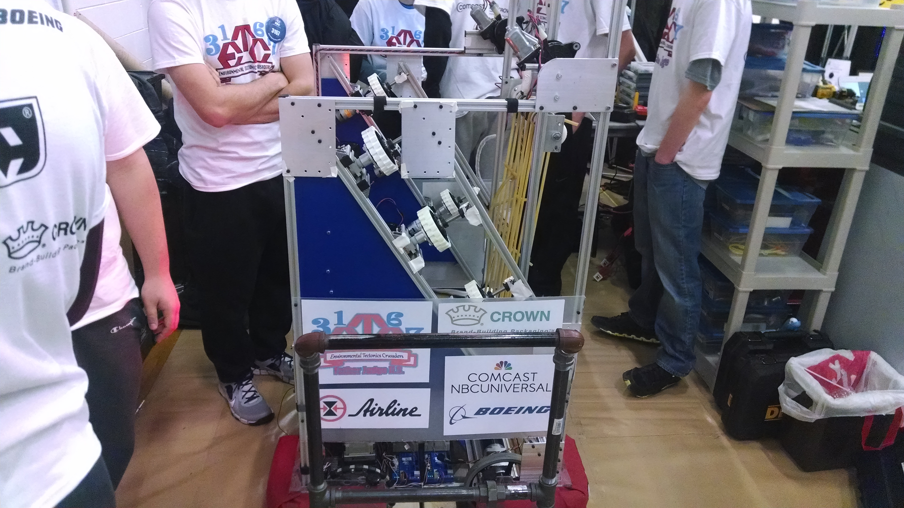
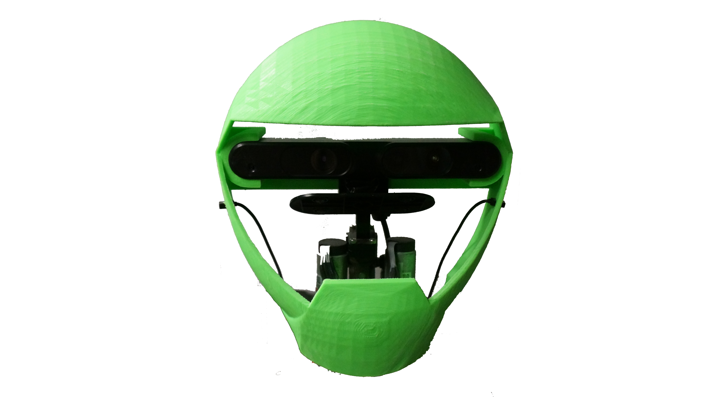

Thanks for visiting my website/github page.
Hi, my name is Ryan Young and I am a student at Drexel University. I am currently pursuing my BS in Software engineering and my MS in Software engineering with a concentration in artificial intelligence. My passion is robotics and it has been for the last 5 years. In high school I participated in FIRST robotics for three years and still continue to mentor at my high school. I also do research on HUBO the humanoid robot at Drexel. More information on my volunteering as a software mentor and my research and experience with HUBO and other robots is below. This website is still being updated and does not go into detail with any of the work I've done. If you are interested in talking to me about any of my projects send me an email (Ryan at rdyoung.us) and I'll gladly talk or arrange a meeting to talk in person.
FIRST robotics experience and mentoring
I am a proud mentor and member of FIRST robotics team 3176, if you'd like to read more about my experiences there click here.
HUBO
The majority of my current work revolves around software development for HUBO the humanoid robot. I have worked on everything about the robot from reassembling the leg to developing an active balancing system to fixing broken wires with solder and wire wrap. HUBO has taught me many different things including introducing me to ROS and giving me a solid foundation on linux system administration.
MAESTOR

One of the first large projects that I got to work on during my college career was MAESTOR. MAESTOR is an operating platform for HUBO the humanoid robot that provides a lot of flexibility and power for HUBO developers. To learn more about MAESTOR click here .
Sensors
HUBO originally did not have a lot of sensors which made it really hard to interact with the world around it. With the development of MAESTOR I was able to begin to integrate different types of external sensors to give HUBO senses comparable to the human senses. To learn more about the sensor work I did click here .
Current Work
I currently am doing my second co-op with AIG working on HUBO. My work first co-op's work was primarily on the software development and sensor integration as well as general maintenance and operation of HUBO. This second co-op's focus is on using the new sensors that I have given HUBO as well as machine learning and knowledge representation and reasoning techniques to make HUBO smarter. The first project that I have done so far was using joint data calculated from a human skeleton from the RGB-Depth sensor to classify different dance poses. The joint angles are classified using a random forest classifier and when HUBO recognizes a pose it dances in response appropriately.